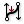

 BiArc
Component Index > Curve > Curve > Primitive > BiArc
Create a bi-arc based on endpoints and tangents.
Inputs
| Name | ID | Description | Type |
|---|---|---|---|
| Start Point | S | Start point of bi-arc. | Point |
| Start Tangent | Ts | Tangent vector at start of bi-arc. | Vector |
| End Point | E | End point of bi-arc. | Point |
| End Tangent | Te | Tangent vector at end of bi-arc. | Vector |
| Ratio | R | Ratio of bi-arc segment weight | Number |
Outputs
| Name | ID | Description | Type |
|---|---|---|---|
| First arc | A1 | First segment of bi-arc curve | Arc |
| Second arc | A2 | Segment segment of bi-arc curve | Arc |
| Bi-Arc | B | Resulting bi-arc. | Curve |
Copyright © 2016 Robert McNeel & Associates.